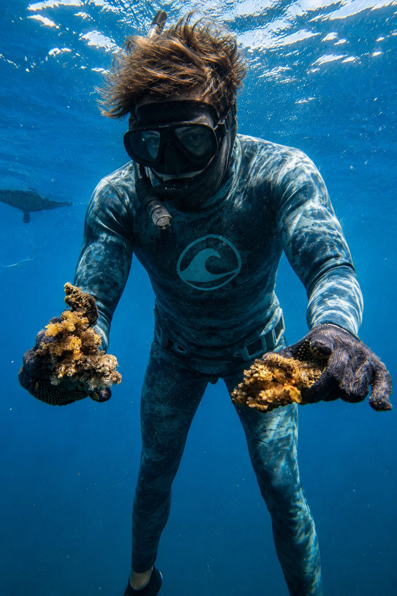
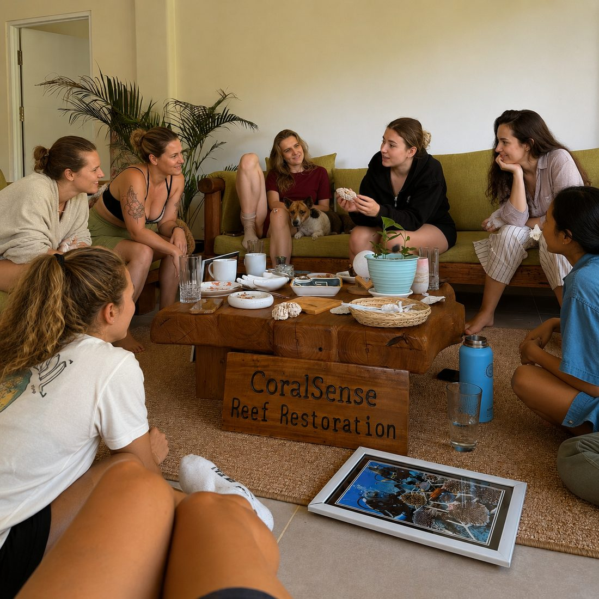
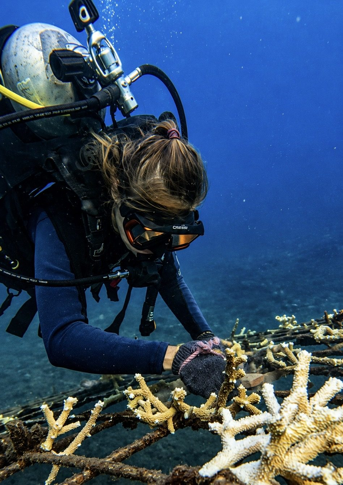
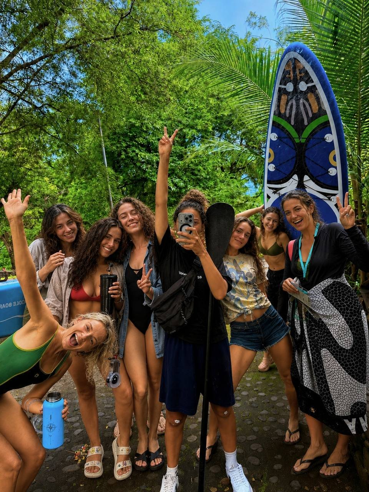
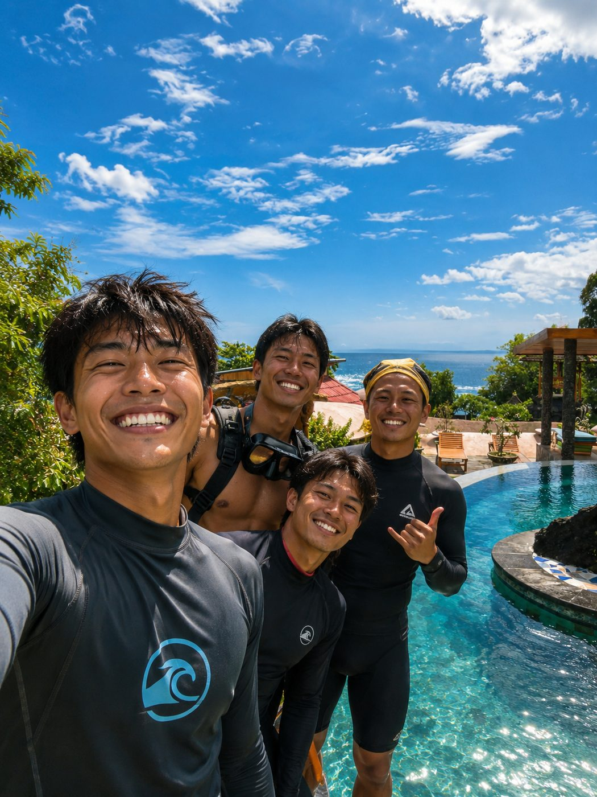
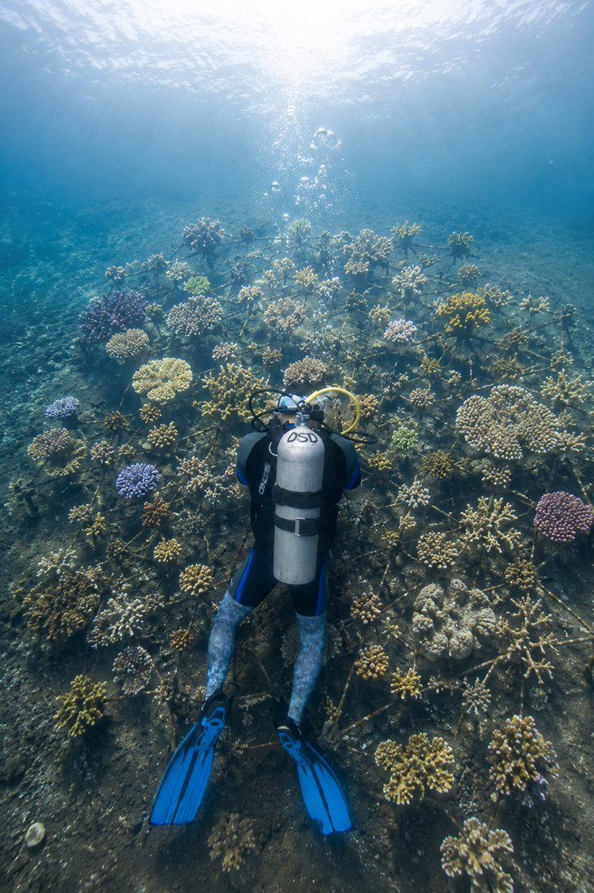
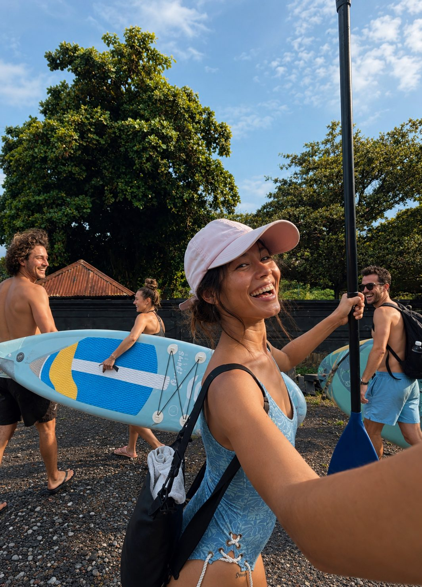

Ныряй с нами в Амеде и высаживай кораллы своими руками. Уедешь с впечатлениями, новыми знаниями, друзьями из разных стран и вкладом в здоровье океана, который останется после тебя надолго.
Риф сам решает, что нужно сегодня: посадка, спасение сломанных кораллов или уход за ними.

Снаряжение, материалы, обед, лекция и именной сертификат входят всегда.
С 9:00 до 15:00. Лекция, 1 погружение с восстановлением кораллов, обед.
Подходит, если хочешь спокойно попробовать.
После программы можно остаться: SUP, пинг-понг, йога, бассейн. Подождать тех, кто на втором погружении, и провести вечер вместе.
Узнать датыС 9:00 до 19:00. Лекция, 2 погружения с разными задачами, обед, закат.
Подходит, если хочешь прожить настоящий день нашей команды.
Узнать датыДень 1: наш научный сад в Амеде, ночь в Coral Home.
День 2: наш второй сад в Паданг-Бае, в другой части Бали. Самый большой коралловый сад на Бали, высаженный людьми, и один из крупнейших в Азии: уже 500 000 кораллов.
Подходит, если хочешь погрузиться глубже.
2 сада, 2 подхода: в научном саду занимаешься исследованиями, во втором видишь другие методы, другие условия океана и другие виды кораллов. Практика разностороннее, вклад больше.
Входит: 1 ночь, трансфер между садами, снаряжение, обеды, лекции, сертификат.
Узнать датыДаты гибкие. Напиши в WhatsApp, и мы подберём удобный день.
Отличный план. Мы хороший старт для поездки: побудешь с нами 1–2 дня, а дальше подскажем, куда ехать и что посмотреть на острове. Дадим контакты водителей, посоветуем или поможем найти жильё. А потом отправишься дальше, уже как свой человек.
«Это было так весело и по-настоящему ценно: правда чувствуешь, что у тебя миссия помочь рифу. 10 из 10. Если бы можно было поставить 1000 звёзд, я бы поставил.»
«Мы собирали и высаживали кораллы в их коралловом саду. Это точно стоит сделать, хотя всё не так просто, как кажется!»
«Было удивительно видеть, как быстро рыбки и крабы поселились среди спасённых кораллов, которые мы только что закрепили. Очень тёплое и радостное чувство.»
Не будучи биологом, ты окажешься в самой настоящей морской биологии. О такой практике мечтают многие биологи, а здесь она доступна каждому.
Важно: это программы со скубой, нужен сертификат Open Water. Нет сертификата? Читай ниже.



Здесь нет туристических толп. Зато здесь один из лучших подводных миров Бали и очень красивая природа. Сюда едут все, кто любит океан.
Тебе не нужно ничего искать самостоятельно. Мы познакомим с лучшими и самыми бюджетными дайв- и фридайв-центрами, гидами, водителями. С нами у тебя есть семья на Бали, и можно ни о чём не беспокоиться.


Не ныряешь со скубой?Есть Coral Restoration Day для снорклинга и фридайвинга. Ты всё равно помогаешь рифу своими руками: со снорклингом высаживаешь кораллы с берега, во фридайве закрепляешь их под водой на одном вдохе.
Для скубы да, Open Water. Нет сертификата? Не проблема. Можно пройти курс скуба-дайвинга перед нашими погружениями, около 3 дней (от $375, ≈ 31 100 ₽, оплачивается отдельно, у наших партнёров). Сертификат международный и действует всю жизнь в любой стране. Это вложение в себя и в будущие путешествия.
Это тот самый настоящий Бали: без туристических толп, с одним из лучших подводных миров острова. Затонувший корабль, подводные статуи, коралловые сады, черепахи, иногда дельфины и киты. Сюда едут все, кто любит океан.
Напиши в WhatsApp +62 812-4836-8288: даты и сколько вас. Подберём удобный день.
Смотри наши пакеты от 1 недели: дайвинг каждую неделю, жильё у моря и команда Coral Sense рядом.
Нажми на кнопку и напиши в WhatsApp или в Instagram. Coral Sense ответит тебе на русском.